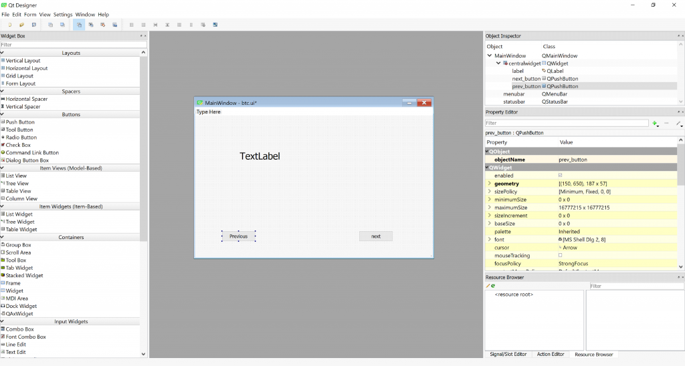

Hi everyone, in this blog post I want to explain how to start developing desktop applications using Qt and Python. We will use PyQt5 module in order to connect Qt with Python. Qt was originally designed for use with C++ but it has many benefits which helped its growth and compability on all major desktop platforms (Windows, Linux, Mac OS). A link to a sample program I created is also given at the end of the post in order to help you understand the basics and maybe use it as a skeleton for your project.
First we start “Qt Designer” which helps us create a GUI for our application. This step is the same regardless of which programming language you want to use for the backend and logic of your program.
We drag and drop two buttons and a text label into our main window. We will also give them meaningful names: “prev_button” and “next_button”. “TextLabel” name seems fine for now.

We can change item properties using the “property editor” on the right:

In the panel under “Property Editor” you can also see the name “Signal/Slot Editor” which is an important functionality in Qt. but for now we won’t cover this and only stick to the very basics.
Okay, you can fiddle with Qt Designer if you like, finally you should save it somewhere on your computer with the format “.ui (Designer UI Files)”.
*** It’s import to know that we are using Python3 and PyQt5 in this tutorial ***
Now we should open some IDE or text Editor and start working on the backend python application.
we start by importing the required modules and specifying ui file for the application to use:
1
2
3
from PyQt5 import QtCore, uic, QtWidgets
qtCreatorFile = "btc.ui" # Enter file here.
Ui_MainWindow, QtBaseClass = uic.loadUiType(qtCreatorFile)
You should also tell python to start a GUI application!:
1
2
3
4
5
6
7
8
9
10
11
12
13
class MyApp(QtWidgets.QMainWindow, Ui_MainWindow):
def __init__(self):
QtWidgets.QMainWindow.__init__(self)
Ui_MainWindow.__init__(self)
self.setupUi(self)
#.... you application continues here ....
if __name__ == "__main__":
app = QtWidgets.QApplication(sys.argv)
window = MyApp()
window.show()
sys.exit(app.exec_())
It is not important of you do not understand what these lines mean at first. Gradually you will learn everything.
I recommend you open the template file and continue your work from that. It is mych easier than typing all of these or copying them from here. the next important thing is connecting the buttons on the screen to some functions in our application, or else this buttons won’t do anything when pressed. so you add this line in __init__ in your main qt app class:
1
self.prev_button.clicked.connect(self.GoPrev)
It says that when user clicked “prev_button” run the function “GoPrev” the same way for this:
1
self.next_button.clicked.connect(self.GoNext)
then we define our click functions which should only take one argument which is self:
1
2
def GoPrev(self):
....
and do you stuff there or call other functions from there. There may also be other ways of doing this which I’m not aware of. I’m not a professional Qt developer anyway! One more thing, this is how you set the text for a label:
1
self.label.setText("This is a useless text box")
Now you know the basics and can google your way for interacting with more controls and using advanced functions of Qt. The python code and UI file should be together for the program to start.
For now we won’t cover how to package it into a single executable file or handle Qt dependencies. It’s good to know this program can be run without any modification on Windows, Linux or Mac OS or any other operating system which supports Qt! How great is that?!
The sample given below is an application which retrieves bitcoin price from CoinDesk API and shows it to you. In addition to the current price shown on app start, you can use Next and Previous buttons to view historical data.
run it like this:_
1
$ python3 btc.py
_I hope it will be both educational and useful!
The template file can also be found in the same github project folder with the name “template.py”
Link:
[ https://github.com/Xcess/python_qt_start ]
Have fun developing everyone!
Shahriar
Comments powered by Disqus.